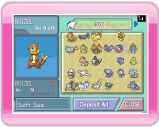
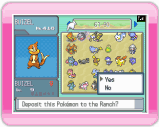
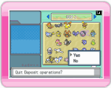
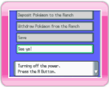

14 |
Pokémon overbrengen |
 |
Lees "13. Een verbinding maken met de DS", voordat je Pokémon overbrengt naar je ranch.

DS-scherm
Selecteer DEPOSIT POKéMON TO THE RANCH (Pokémon overbrengen naar de ranch) in het hoofdmenu van de DS. Het scherm rechts verschijnt.

DS-scherm
Kies de Pokémon van je Nintendo DS die je wilt plaatsen op de ranch. Er verschijnt een berichtvenster met de vraag DEPOSIT THIS POKéMON TO THE RANCH? (deze Pokémon overbrengen naar de ranch?). Selecteer YES (ja).

DS-scherm
Selecteer CLOSE (afsluiten) als je klaar bent met het overbrengen van Pokémon. Er verschijnt een berichtvenster met de vraag QUIT DEPOSIT OPERATIONS? (overbrengen beëindigen?). Selecteer YES (ja) om terug te gaan naar het hoofdmenu van de DS.

DS-scherm
Als je in het hoofdmenu van de DS SEE YA! (tot ziens!) selecteert, verschijnt er een berichtvenster met de vraag WOULD YOU LIKE TO SAVE AND QUIT? (wil je het spel opslaan en stoppen?). Selecteer YES (ja) om de verbinding te verbreken. Als TURNING OFF THE POWER (stroom wordt uitgeschakeld) op het scherm verschijnt, druk |
 om het spel te beëindigen.
om het spel te beëindigen. |
 |
 |